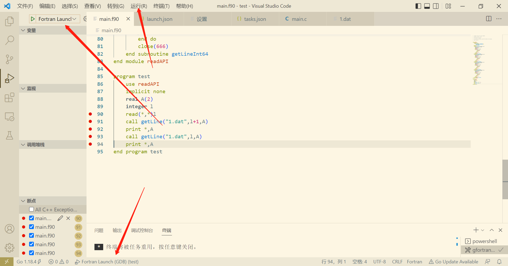
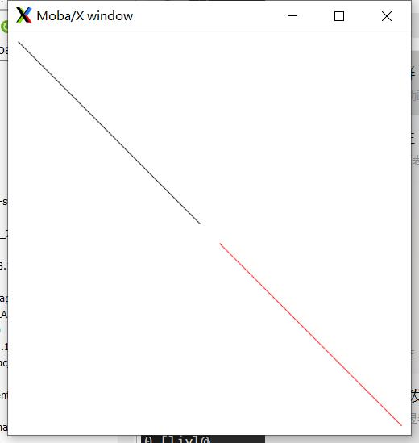

date: 2023-12-22 09:44:42
tags: malloc memory check
- 代码
#include <iostream>
#include <malloc.h>
using namespace std;
int main()
{
// 调用mallinfo()函数获取堆内存的统计信息
struct mallinfo mi;
int *a[10];
size_t old=0;
size_t delta=0;
for(int i=0;i<10;i++)
{
a[i]=0;
a[i] = (int*)malloc(40000000);
mi = mallinfo();
// 计算堆内存的已使用大小
size_t heap_used = mi.arena + mi.hblkhd;
// 打印堆内存的统计信息
delta = heap_used - old;
cout << "heap_used: " << heap_used << " bytes| delta: " << delta << endl;
cout << mi.arena<<" "<<mi.ordblks<<" "<<mi.smblks<<" "<<mi.hblks<<endl;
old = heap_used;
}
return 0;
}
- 输出结果
heap_used: 40214528 bytes| delta: 40214528
212992 1 0 1
heap_used: 80216064 bytes| delta: 40001536
212992 1 0 2
heap_used: 120217600 bytes| delta: 40001536
212992 1 0 3
heap_used: 160219136 bytes| delta: 40001536
212992 1 0 4
heap_used: 200220672 bytes| delta: 40001536
212992 1 0 5
heap_used: 240222208 bytes| delta: 40001536
212992 1 0 6
heap_used: 280223744 bytes| delta: 40001536
212992 1 0 7
heap_used: 320225280 bytes| delta: 40001536
212992 1 0 8
heap_used: 360226816 bytes| delta: 40001536
212992 1 0 9
heap_used: 400228352 bytes| delta: 40001536
212992 1 0 10
date: 2023-03-30 15:26:14
tags: SACA FORTRAN CRTS
主核代码 main.f90
program main
use utility
implicit none
integer :: i, j
integer :: N = 10
integer, pointer :: matrix_A(:,:)
integer, pointer :: vector_B(:)
integer, pointer :: vector_C(:)
type(ParaType)::para
integer, external :: slave_func
allocate(matrix_A(N,N), vector_B(N), vector_C(N))
para%N = N
para%matrix_A => matrix_A
para%vector_B => vector_B
para%vector_C => vector_C
print *, "A and B"
do i = 1, N
do j = 1, N
matrix_A(j,i) = floor(11*rand())
write(*, "(I4)", advance="no") matrix_A(j,i)
end do
vector_B(i) = floor(11*rand())
write(*, "(I4)", advance="no") vector_B(i)
print *
end do
call CRTS_Init()
call CRTS_athread_spawn(slave_func, para)
call CRTS_athread_join()
print *, "C = A.dot(B)"
do i = 1, N
write(*, "(I4)", advance="no") vector_C(i)
end do
print *
end program main
工具模块 utility.f90
module utility
implicit none
type, public :: ParaType
integer :: N
integer,pointer :: matrix_A(:,:)
integer,pointer :: vector_B(:)
integer,pointer :: vector_C(:)
end type ParaType
interface
integer function CRTS_smng_get_tid()
end function CRTS_smng_get_tid
end interface
contains
end module utility
从核代码 slave.f90
subroutine slave_func(para)
use utility
implicit none
type(ParaType), intent(in) :: para
integer :: N
integer, pointer :: matrix_A(:,:)
integer, pointer :: vector_B(:)
integer, pointer :: vector_C(:)
integer :: i, j
integer :: myid
integer :: tmp
myid = CRTS_smng_get_tid()
N = para%N
if(myid < N) then
matrix_A => para%matrix_A
vector_B => para%vector_B
vector_C => para%vector_C
tmp = 0
do i = 1,N
tmp = tmp + matrix_A(i, myid+1) * vector_B(i)
end do
vector_C(myid+1) = tmp
end if
end subroutine slave_func
Makefile
FC = swgfortran
main: main.o slave.o utility.o
$(FC) -mhybrid $^ -o $@
main.o: main.f90 utility.o
$(FC) -mhost -c $<
slave.o: slave.f90 utility.o
$(FC) -mslave -c slave.f90
utility.o: utility.f90
$(FC) -c $<
run:
bsub -I -b -q q_linpack -cgsp 64 -n 1 ./main
clean:
rm -rf *.o main *.mod
程序输出

date: 2022-08-22 14:34:18
tags:
cblas_dgemm参数详解
[dragon](mailto: wauqas@gmail.com) 22-8-15
代码
#include <cblas.h>
#include <stdio.h>
int main()
{
int i = 0;
double A[6] = {1.0, 10.0, 20.0, 30.0, 40.0, 50.0};
double B[6] = {1.0, 10.0, 20.0, 30.0, 40.0, 60.0};
double C[9] = {.5, .5, .5, .5, .5, .5, .5, .5, .5};
cblas_dgemm(CblasColMajor, CblasNoTrans, CblasTrans, \
3, 3, 2, 1, A, 3, B, 3, 0, C, 3);
for (int j = 0; j < 3; j++)
{
for (i = 0; i < 3; i++)
printf("%lf ", C[i*3+j]);
printf("\n");
}
return 0;
}
解释
void cblas_dgemm(
OPENBLAS_CONST enum CBLAS_ORDER Order, //行列主序
OPENBLAS_CONST enum CBLAS_TRANSPOSE TransA, //矩阵A转置
OPENBLAS_CONST enum CBLAS_TRANSPOSE TransB, //矩阵B转置
OPENBLAS_CONST blasint M, //op(A)的行数
OPENBLAS_CONST blasint N, //op(B)的列数
OPENBLAS_CONST blasint K, //op(A)的列数和op(B)的行数
OPENBLAS_CONST double alpha, //A的缩放
OPENBLAS_CONST double *A, //matrix A
OPENBLAS_CONST blasint lda, //A的第一维度,跟主序有关
OPENBLAS_CONST double *B, //matrix B
OPENBLAS_CONST blasint ldb, //B的第一维度
OPENBLAS_CONST double beta, //C 的缩放
double *C, //matrix C
OPENBLAS_CONST blasint ldc //C的第一维度
);
最终结果为$C=alpha*op(A)op(B)+betaC$
date: 2022-08-22 16:39:25
tags: cuda
CUDA
cuda program kernel function:
__global__ void functionName(){}
or
void __global__ functionName(){}
Hello World
Hello.cu
```c++ #includeCompile:
nvcc Hello.cu -o Hello
Execute:
./Hello
Result:
Hello World
Hello World
Hello World
Hello World
why? <<<2,2>>>
CUDA kernel run in Device. We should realise the differences of Host datas with Device datas.
Let's see the CUDA functions !
cudaMalloc(
(void\*\*)&ptr, int \*ptr -> (void\*\*)&ptr
size, sizeof(ptr_type);
)
ptr will get some places from Device
cudaMemcpy(
dst, date to dst
src, date from src
size, how many bytes
kind,where to where(cudaMemcpyHostToDevice,cudaMemcpyDeviceToHost and ......)
)
cudaDeviceSynchronize()
Wait operate in Device finish
GPU has lot's of same things with CPU
different kinds of memory is one of the same things.
dynamic common Element
```c++ double *a; int M=1000; cudaMalloc((void**)&a,M); cudaMemcpy(....); kernel<<static global Element
global and static__device__ double a[5];
__device__ int b;
compiler should know the size of static global Element,and we need't be used by arg-way
needn't kernel<<<1,1>>>(a);
constant Element by arg-way
```c++ int a=1; kernel<<<1,1>>>(a); ```read-only and max size is 4KB
constant Element by __constant__
```c++ __constant__ int a=1; ```read-only and max size is 64 in most NVIDIA GPU
How to copy datas from/to constant Element ?
cudaMemcpyFromSymbol(
dst, datas to dst
src, datas from src
copykind, cudaMemcpyDeviceToHost
)
cudaMemcpyToSymbol(
dst, datas to dst
src, datas from src
copykind, cudaMemcpyHostToDevice
)
dynamic shared memory
```c++ __global__ void kernel(){ int n=10; __shared__ int a[n]; } ```read and write, 64KB per block. same block with same shared memory value
static shared memory
outside:kernel<<<1,1,sharedMemorySize>>>()
inside:
extern __shared__ double a[]
not *a, pointer isn't array
register memory
fast and small__global__ void kernel(){
int a=1;
const int b=1;
}
dynamic unified memory
```c++ double *x,*y; const int M=sizeof(double)*10000; cudaMallocManaged((void**)&x,M); cudaMallocManaged((void**)&y,M); *x=1; *y=2; kernel<<static unified memory
```c++ __device__ __managed__ int ret[1000]; __device__ __managed__ int a; int main(){ kernel<<Free Memory
`cudaFree(void* ptr)`Atoi operate
look like synchronize, but really without synchronizeCUDA Stream
Let's see the functions!type: cudaStream_t stream
cudaStreamCreate(&stream)
cudaStreamDestory(stream)
cudaStreamSynchronize(stream), wait stream finish
cudaStreamQuery(stream), check stream finish or not, cudaSuccess or cudaErrorNotReady
run in stream : kernel<<<gridSize, blockSize,shared_size,stream>>>();
cudaMemcpyAsync(
void *dst
const void *src
size_t count
enum cudaMemcpyKind kind
cudaStream_t stream, if you want to use default stream, by 0
)
which datas can be MemcpyAsync ?
cudaMallocHost(void**ptr, size_t size)
cudaHostAlloc(void**ptr, size_t size,size_t flag)
if flag==cudaHostAllocDefault, cudaMallocHost equal to cudaHostAlloc
Free:cudaFreeHost(void* ptr)
date: 2022-08-23 14:52:12
tags: vscode fortran debug
please make sure you have gdb and gfortran
-
launch.json
{ "version": "0.0.1", "configurations": [ { "name": "Fortran Launch (GDB)", "type": "cppdbg", "request": "launch", "targetArchitecture": "x64", "program": "${workspaceRoot}\\${fileBasenameNoExtension}.exe", "miDebuggerPath": "D:\\cygwin64\\bin\\gdb.exe", "args": [], "stopAtEntry": false, "cwd": "${workspaceRoot}", "externalConsole": true, "preLaunchTask": "gfortran" } ] }"miDebuggerPath" insert your gdb full path.
-
tasks.json
{ "tasks": [ { "label": "gfortran", "type": "shell", "command": "gfortran -o ${fileBasenameNoExtension}.exe ${fileBasename} -g", "options": { "cwd": "${workspaceFolder}" }, "group": { "kind": "build", "isDefault": true } }, ], "version": "2.0.0" }
configure finish
method of using

there are three or more ways to debug the example code.
you can also set some break points.
Wish you best.
date: 2023-03-02 15:12:08
tags: gpt python
在3月1日刚发布的gpt-3.5-turbo，学习一下它的调用方法
- 以post方法调用
import requests
url = 'https://api.openai.com/v1/chat/completions'
Question = input("Question:")
data = {"model": "gpt-3.5-turbo","messages": [{"role": "user", "content": Question}]}
headers = {
'Authorization': 'Bearer sk-' #后面输入自己的api-key
}
response = requests.post(url, json=data, headers=headers)
if response.status_code == 200:
x = response.json()
print(x['choices'][0]['message']['content'])
else:
print("error:",response.status_code)
启动程序之后输入问题然后发送请求。
- 以python openai模块调用
import openai
openai.api_key="sk-"
message=[]
while(True):
Q = input("user:")
message.append({"role":"user","content":Q})
com=openai.ChatCompletion.create(model="gpt-3.5-turbo",messages=message)
message.append({"role":"assistant","content":com.choices[0].message.content})
print("assistant:",com.choices[0].message.content)
跟上面的代码功能有所不同的是，这个可以联系上下文，类似网页上与chatgpt对话的过程。 用户的角色设置为user，ai的角色设置为assistant。 目前不管是直接post请求还是用python的openai模块，都不需要连接外网，平时使用较为方便。
程序大小问题
在实际测试后发现：直接用post的版本，生成exe的大小在6M左右。而使用openai模块的版本，因为要打包openai模块，大小在70M左右。所以还是建议用post的版本 以下程序也可实现联系上下文
import requests
url = 'https://api.openai.com/v1/chat/completions'
headers = {
'Authorization': 'Bearer sk-'
}
message=[]
while(True):
Q = input("user:")
message.append({"role":"user","content":Q})
data = {"model": "gpt-3.5-turbo","messages": message}
response = requests.post(url, json=data, headers=headers)
if response.status_code == 200:
x = response.json()
print("assistant:",x['choices'][0]['message']['content'])
message.append({"role":"assistant","content":x['choices'][0]['message']['content']})
else:
print("error:",response.status_code)
break
date: 2022-08-23 11:10:23
tags: cuda cpp
make_unique_with_cuda
#include "stdio.h"
#include <memory>
namespace cuda
{
template <typename T>
[[nodiscard]] static auto malloc(std::size_t const size)
{
//nodiscard implies must use it return value, or will encounter an error
static T *d{nullptr};
cudaMalloc(&d, sizeof(T) * size);
return d;
}
template <typename T>
static void free(T *ptr)
{
if (ptr)
{
cudaFree(ptr);
ptr=nullptr;
}
}
template <typename T>
[[nodiscard]] static auto makeUnique(std::size_t size)
{
return std::unique_ptr<T[], decltype(&free<T>)> { malloc<T>(size), free<T> };
}
} // namespace name
__global__ void kernel(float3 *d)
{
int id = threadIdx.x;
// d[id].x=d[id].y=d[id].z=id*1.1;
printf("%g\t%g\t%g\n", d[id].x, d[id].y, d[id].z);
}
void showh(float3 *d)
{
for (int id = 0; id < 5; id++)
{
printf("%g\t%g\t%g\n", d[id].x, d[id].y, d[id].z);
}
}
using namespace cuda;
int main(void)
{
auto const count = 5;
auto hp_points{std::make_unique<float3[]>(count)};
for (int i = 0; i < count; i++)
{
hp_points[i].x=i*1.1;
hp_points[i].y=i*1.1;
hp_points[i].z=i*1.1;
}
// showh(hp_points.get());
auto dp_points{cuda::makeUnique<float3>(count)};
cudaMemcpy(dp_points.get(),hp_points.get(), //get() will return unique ptr's address
sizeof(float3)*count,cudaMemcpyHostToDevice);
kernel<<<1,5>>>(dp_points.get());
cudaDeviceSynchronize();
dp_points.~unique_ptr();
return 0;
}
date: 2022-11-17 14:36:31
tags: makefile wildcard filter-out patsubst
文件列表
main.f90
makefile
sub1.f90
sub2.f90
sub3.f90
makfile代码
main = main.f90
SRC = $(wildcard *.f90)
SRC := $(filter-out $(main),$(SRC))
SRC := $(patsubst %.f90, %.o, $(SRC))
main:
echo $(SRC)
- wildcard 在对变量调用时，保持通配符特性
- filter-out 过滤器，删除后面跟的第一个参数
- patsubst 将变量中元素根据参数替换，上述代码将所有.f90替换为.o
执行结果
$> make
echo sub1.o sub2.o sub3.o
sub1.o sub2.o sub3.o
date: 2023-03-13 15:50:12
tags:
MPI_Cart_Create
将一维的通信空间转为多维
接口
subroutine MPI_Cart_shift(comm, direction, disp, rank_source, rank_dest)
integer,intent(in) ::comm, !通信域
integer,intent(in) ::direction, !维度序号
integer,intent(in) ::disp, !偏移量
integer,intent(out) ::rank_source, !向本进程发送数据的进程 如果没有则为-1
integer,intent(out) ::rank_dest !本进程发送数据的目的进程 如果没有则为-1
end subroutine MPI_Cart_shift
测试
- 查看period对网络生成的影响
program main
use mpi
integer ierr
integer rank,size
integer np_dim(2)
logical period(2)
integer mpi_world_cart
integer src,dest
np_dim=3
period(1)=.false.
period(2)=.true.
call MPI_Init(ierr)
call MPI_Cart_create( MPI_COMM_WORLD &
, 2 &
, np_dim &
, period &
, .false. &
, mpi_world_cart &
, ierr &
)
call MPI_Comm_rank(mpi_world_cart,rank,ierr)
call MPI_Comm_size(mpi_world_cart,size,ierr)
call MPI_Cart_shift(mpi_world_cart, 0, 1, src, dest,ierr)
call MPI_Finalize(ierr)
print *,rank,"of",size,"|",src,"of",dest,"|",(ierr==0)
end program main
输出
6 of 9 | 3 of -1 | T
1 of 9 | -1 of 4 | T
2 of 9 | -1 of 5 | T
0 of 9 | -1 of 3 | T
5 of 9 | 2 of 8 | T 以此条为例，5从2接收，发送到8
4 of 9 | 1 of 7 | T
3 of 9 | 0 of 6 | T
7 of 9 | 4 of -1 | T
8 of 9 | 5 of -1 | T
第一维度的period设置为.false.，导致网络在第一维度不是环状的，而是线性的；
第二维度的period设置为.true.，导致网络在第二维度是环状的，最后一个进程的下一个进程是第一个进程。
这种设置方式会产生一个类似圆柱形的结构，圆柱的底是头尾连接的，圆柱的高是头尾分离的。
因为MPI_Cart_shift选取的维度是第一维度，且period(1)==.false.，所以0~2进程的src为-1，6~8进程的dest为-1。
以下是period(1)==.true.时程序的输出。
0 of 9 | 6 of 3 | T
6 of 9 | 3 of 0 | T
8 of 9 | 5 of 2 | T 8从5接受，发送到2
7 of 9 | 4 of 1 | T
1 of 9 | 7 of 4 | T
3 of 9 | 0 of 6 | T
2 of 9 | 8 of 5 | T
4 of 9 | 1 of 7 | T
5 of 9 | 2 of 8 | T
MPI_Cart_Create函数的reorder参数是用来指定创建出来的Cartesian拓扑是否可以被重新排序的。具体来说，如果reorder参数被设置为1，那么MPI库就可以为了提高性能而重新排列进程的拓扑结构。如果reorder参数被设置为0，那么MPI库就必须按照进程的原始顺序来创建Cartesian拓扑结构。
当reorder参数被设置为1时，MPI库可以为了提高性能而重新排列进程的拓扑结构。例如，假设原始的进程布局如下所示：
0 1 2 3
4 5 6 7
8 9 10 11
如果reorder参数被设置为1，MPI库可以重新排列进程的拓扑结构，例如：
0 4 8 9
1 5 6 10
2 3 7 11
这样做的目的是为了使相邻的进程在物理空间中更接近，从而减少通信延迟。但是需要注意的是，重新排序进程的拓扑结构可能会影响到原始程序的正确性，因此在使用该特性时需要小心谨慎。
date: 2022-08-25 09:17:16
tags: openblas
OpenBlas-Make
environment:
- redhat
- gcc version 4.8.5 20150623 (Red Hat 4.8.5-36) (GCC)
build
make CC=gcc FC=gfortran make_NB_JOBS=1
make install PREFIX=<install_path>
if you don't make with suffix make_NB_JOBS, and has a old lapack in you machine,
openblas will generate before included lapack built, And won't call the old lapack lib.
test
#include <cblas.h>
#include <stdio.h>
int main()
{
int i=0;
double A[6] = {1.0,2.0,1.0,-3.0,4.0,-1.0};
double B[6] = {1.0,2.0,1.0,-3.0,4.0,-1.0};
double C[9] = {.5,.5,.5,.5,.5,.5,.5,.5,.5};
cblas_dgemm(CblasColMajor, CblasNoTrans, CblasTrans,3,3,2,1,A, 3, B, 3,2,C,3);
for(i=0; i<9; i++)
printf("%lf ", C[i]);
printf("\n");
return 0;
}
$ gcc -I ~/OpenBLAS/include -L ~/OpenBLAS/lib -lopenblas main.cpp -o solver
$ ./solver
11.000000 -9.000000 5.000000 -9.000000 21.000000 -1.000000 5.000000 -1.000000 3.000000
date: 2023-01-08 21:20:37
tags:
离线安装
若计算机中的python版本为Python 3.6.8，需要安装python3.8.5
PyG is available for Python 3.7 to Python 3.10.
安装Python3.8.5
https://www.python.org/downloads/release/python-385/
tar.xz文件解压命令 tar xf
进入解压后的文件，执行安装三部曲
./configure --prefix=${HOME}/Python3.8.5
make
make install
修改.bashrc，这次不但要添加python目录到python，还需要加alias将/usr/bin/下的python3屏蔽
#Python-3.8.5
export PATH=$PATH:${HOME}/Python3.8.5/bin
alias python3=${HOME}/Python3.8.5/bin/python3
检查版本
[liyl@gpu-node1 ~]$ python3
Python 3.8.5 (default, Jan 5 2023, 14:09:20)
[GCC 4.8.5 20150623 (Red Hat 4.8.5-44)] on linux
Type "help", "copyright", "credits" or "license" for more information.
>>>
安装wheel
pip3 install wheel-0.37.1-py2.py3-none-any.whl --user
安装numpy
https://pypi.org/project/numpy/1.23.5/#files numpy-1.23.5-cp38-cp38-manylinux_2_17_x86_64.manylinux2014_x86_64.whl
安装包已经放到文档目录
python3 -m pip install numpy-1.23.5-cp38-cp38-manylinux_2_17_x86_64.manylinux2014_x86_64.whl --user
--user： 安装到用户目录，不需要sudo权限，安装位置为**./.local/lib/python3.8/site-packages**
安装typing_extensions
python3 -m pip install typing_extensions-4.4.0-py3-none-any.whl --user
安装pyTorch
http://download.pytorch.org/whl/torch_stable.html
torch-1.13.1+cpu-cp38-cp38-linux_x86_64.whl
python3 -m pip install torch-1.13.1+cpu-cp38-cp38-linux_x86_64.whl --user
注意事项
安装要注意先后关系
如果给你的安装包无法安装numpy或是pyTorch，首先检查python版本和主机所属平台，可以通过以下python代码实现查询
python3 -m pip debug --verbose
我的运行结果：
Compatible tags: 87
cp38-cp38-manylinux2014_x86_64
cp38-cp38-manylinux2010_x86_64
cp38-cp38-manylinux1_x86_64
cp38-cp38-linux_x86_64
cp38-abi3-manylinux2014_x86_64
cp38-abi3-manylinux2010_x86_64
cp38-abi3-manylinux1_x86_64
cp38-abi3-linux_x86_64
cp38-none-manylinux2014_x86_64
cp38-none-manylinux2010_x86_64
cp38-none-manylinux1_x86_64
cp38-none-linux_x86_64
cp37-abi3-manylinux2014_x86_64
cp37-abi3-manylinux2010_x86_64
cp37-abi3-manylinux1_x86_64
cp37-abi3-linux_x86_64
cp36-abi3-manylinux2014_x86_64
cp36-abi3-manylinux2010_x86_64
cp36-abi3-manylinux1_x86_64
cp36-abi3-linux_x86_64
cp35-abi3-manylinux2014_x86_64
cp35-abi3-manylinux2010_x86_64
cp35-abi3-manylinux1_x86_64
cp35-abi3-linux_x86_64
cp34-abi3-manylinux2014_x86_64
cp34-abi3-manylinux2010_x86_64
cp34-abi3-manylinux1_x86_64
cp34-abi3-linux_x86_64
cp33-abi3-manylinux2014_x86_64
cp33-abi3-manylinux2010_x86_64
cp33-abi3-manylinux1_x86_64
cp33-abi3-linux_x86_64
cp32-abi3-manylinux2014_x86_64
cp32-abi3-manylinux2010_x86_64
cp32-abi3-manylinux1_x86_64
cp32-abi3-linux_x86_64
py38-none-manylinux2014_x86_64
py38-none-manylinux2010_x86_64
py38-none-manylinux1_x86_64
py38-none-linux_x86_64
py3-none-manylinux2014_x86_64
py3-none-manylinux2010_x86_64
py3-none-manylinux1_x86_64
py3-none-linux_x86_64
py37-none-manylinux2014_x86_64
py37-none-manylinux2010_x86_64
py37-none-manylinux1_x86_64
py37-none-linux_x86_64
py36-none-manylinux2014_x86_64
py36-none-manylinux2010_x86_64
py36-none-manylinux1_x86_64
py36-none-linux_x86_64
py35-none-manylinux2014_x86_64
py35-none-manylinux2010_x86_64
py35-none-manylinux1_x86_64
py35-none-linux_x86_64
py34-none-manylinux2014_x86_64
py34-none-manylinux2010_x86_64
py34-none-manylinux1_x86_64
py34-none-linux_x86_64
py33-none-manylinux2014_x86_64
py33-none-manylinux2010_x86_64
py33-none-manylinux1_x86_64
py33-none-linux_x86_64
py32-none-manylinux2014_x86_64
py32-none-manylinux2010_x86_64
py32-none-manylinux1_x86_64
py32-none-linux_x86_64
py31-none-manylinux2014_x86_64
py31-none-manylinux2010_x86_64
py31-none-manylinux1_x86_64
py31-none-linux_x86_64
py30-none-manylinux2014_x86_64
py30-none-manylinux2010_x86_64
py30-none-manylinux1_x86_64
py30-none-linux_x86_64
cp38-none-any
py38-none-any
py3-none-any
py37-none-any
py36-none-any
py35-none-any
py34-none-any
py33-none-any
py32-none-any
py31-none-any
py30-none-any
根据你的打印内容选择受支持的离线安装包
https://pypi.org/project/ 在这里根据包名查包

对numpy和torch进行简单调用
import torch as t
import numpy as n
a1 = t.ones(3,3)
a2 = t.ones(3,3)
b1 = n.ones((3,3))
b2 = n.ones((3,3))
print(a1+a2)
print(b1+b2)
输出
[liyl@gpu-node1 torch]$ python3 test.py
tensor([[2., 2., 2.],
[2., 2., 2.],
[2., 2., 2.]])
[[2. 2. 2.]
[2. 2. 2.]
[2. 2. 2.]]
pyG
pytorch-geometric简称pyG
https://pytorch-geometric.com/whl/torch-1.13.0%2Bcpu.html
检索需要的版本
安装其他依赖：
python3 -m pip install --user torch_scatter-2.1.0+pt113cpu-cp38-cp38-linux_x86_64.whl
python3 -m pip install --user scipy-1.10.0-cp38-cp38-manylinux_2_17_x86_64.manylinux2014_x86_64.whl
python3 -m pip install --user torch_cluster-1.6.0+pt113cpu-cp38-cp38-linux_x86_64.whl
python3 -m pip install --user torch_sparse-0.6.16+pt113cpu-cp38-cp38-linux_x86_64.whl
python3 -m pip install --user torch_spline_conv-1.2.1+pt113cpu-cp38-cp38-linux_x86_64.whl
python3 -m pip install --user tqdm-4.64.1-py2.py3-none-any.whl
python3 -m pip install --user pytz-2022.7-py2.py3-none-any.whl
python3 -m pip install --user six-1.16.0-py2.py3-none-any.whl
python3 -m pip install --user python_dateutil-2.8.2-py2.py3-none-any.whl
python3 -m pip install --user pandas-1.5.2-cp38-cp38-manylinux_2_17_x86_64.manylinux2014_x86_64.whl
python3 -m pip install --user MarkupSafe-2.1.1-cp38-cp38-manylinux_2_17_x86_64.manylinux2014_x86_64.whl
python3 -m pip install --user Jinja2-3.1.2-py3-none-any.whl
python3 -m pip install --user certifi-2022.12.7-py3-none-any.whl
python3 -m pip install --user charset_normalizer-2.1.1-py3-none-any.whl
python3 -m pip install --user urllib3-1.26.13-py2.py3-none-any.whl
python3 -m pip install --user idna-3.4-py3-none-any.whl
python3 -m pip install --user requests-2.28.1-py3-none-any.whl
python3 -m pip install --user pyparsing-3.0.9-py3-none-any.whl
python3 -m pip install --user joblib-1.2.0-py3-none-any.whl
python3 -m pip install --user threadpoolctl-3.1.0-py3-none-any.whl
python3 -m pip install --user scikit_learn-1.2.0-cp38-cp38-manylinux_2_17_x86_64.manylinux2014_x86_64.whl
-
从源码安装torch-geometric
pyG镜像链接
https://mirrors.aliyun.com/pypi/simple/torch-geometric
cd torch_geometric-2.0.4
python3 -m pip install . --user
测试能否导入成功

date: 2022-11-27 11:11:18
tags: x11 xorg
#include <X11/Xlib.h>
#include <stdlib.h>
#include <stdio.h>
#include <unistd.h>
int main()
{
Display *dsp = XOpenDisplay(NULL);
if (!dsp)
{
return 1;
}
int screenNumber = DefaultScreen(dsp);
unsigned long white = WhitePixel(dsp, screenNumber);
unsigned long black = BlackPixel(dsp, screenNumber);
Window win = XCreateSimpleWindow(dsp,
DefaultRootWindow(dsp), //parent
50, 50, // origin point
400, 400, // size
0, black, // border width and color
white); // backgd
XMapWindow(dsp, win);
Colormap screen_colormap = DefaultColormap(dsp, DefaultScreen(dsp));
XColor red;
int rc = XAllocNamedColor(dsp, screen_colormap, "red", &red, &red);
// alloc color 'red' by its name
if (rc == 0)
{
fprintf(stderr, "XAllocNamedColor - failed to allocated 'red' color.\n");
exit(1);
}
GC gc = XCreateGC(dsp, win, 0, NULL);
XSetForeground(dsp, gc, black);
XDrawLine(dsp, win, gc, 10, 10, 190, 190); //draw a line with color black
XFlush(dsp);
sleep(1);
XSetForeground(dsp, gc, red.pixel); // change color for next draw
XDrawLine(dsp, win, gc, 210, 210, 390, 390); //draw a line with color red
XFlush(dsp);
getchar(); // shutdown key
XDestroyWindow(dsp, win);
XCloseDisplay(dsp);
return 0;
}
